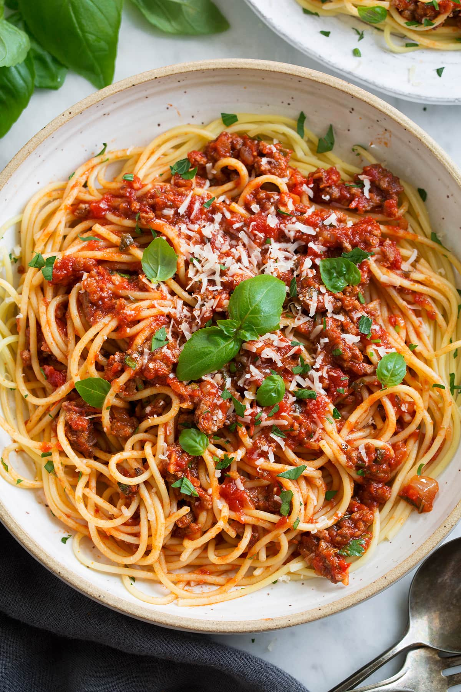

Weeknight Spag

Description
30 minute spaghetti if you're speedy
Ingredients
- Spaghetti
- Onion
- Passata
- Garlic
Steps
- Fry onion.
- Add Passata.
- Add spices. Mostly Oregano and whatever else you have on hand that smells appropriately Italian.
- Deglaze with splash of white wine.
- Start the spaghetti in another pot. When slightly underdone, lift out with tongs and move it to the sauce pan.
- NOW add the garlic and NOT BEFORE. Stir together.
- Serve.